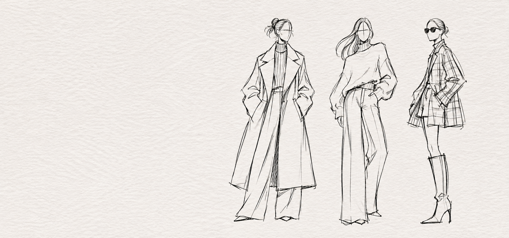
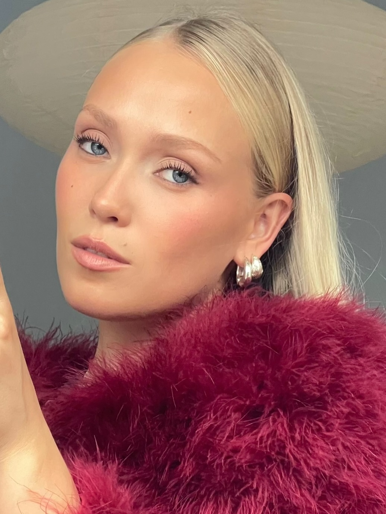
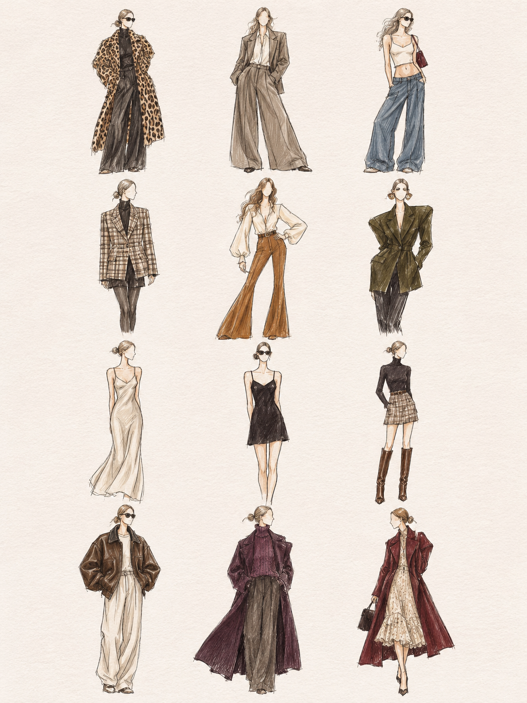
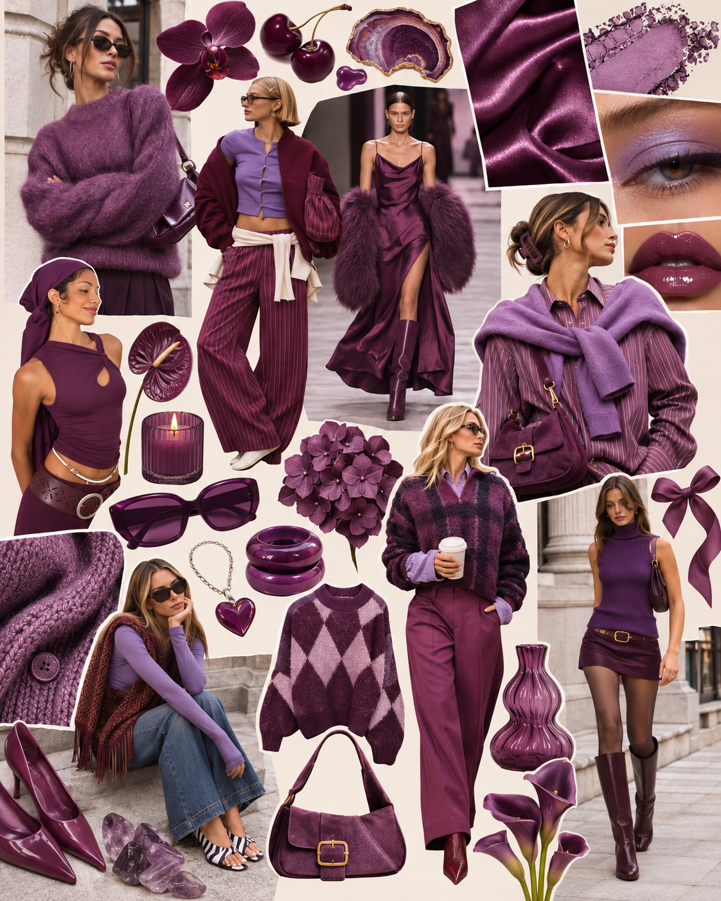
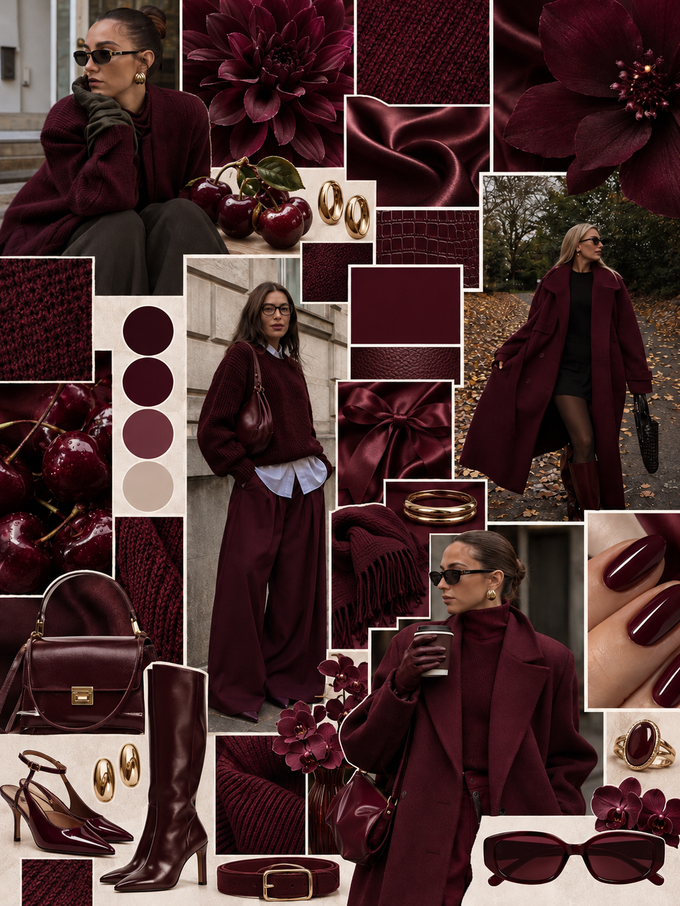
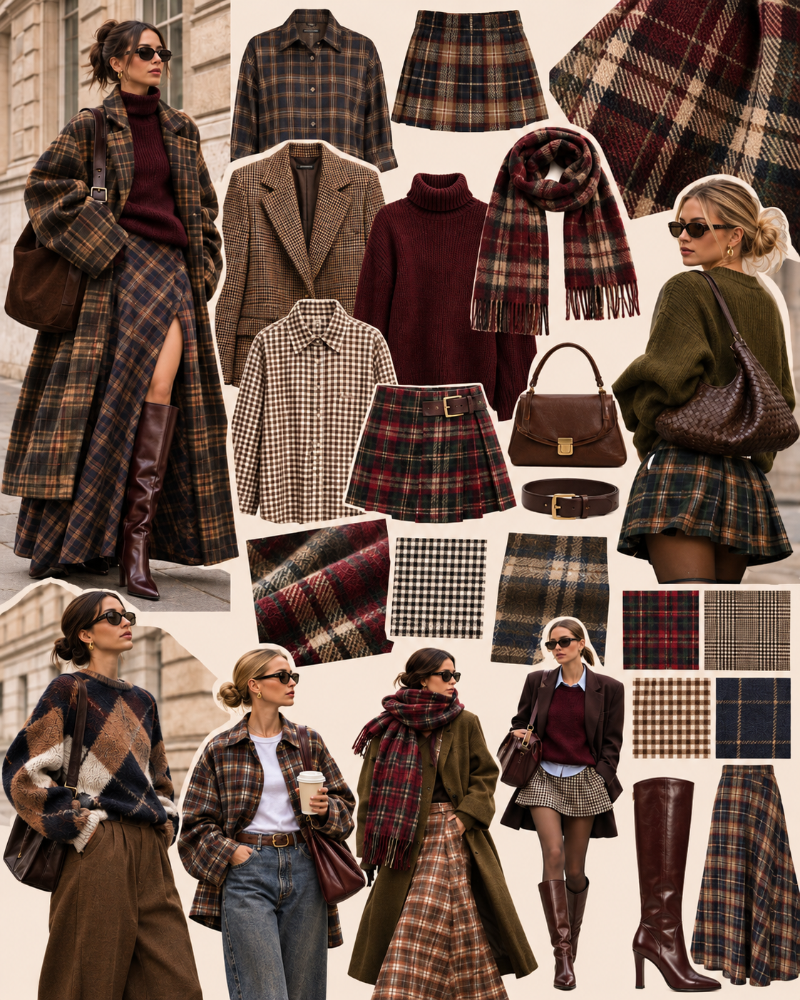
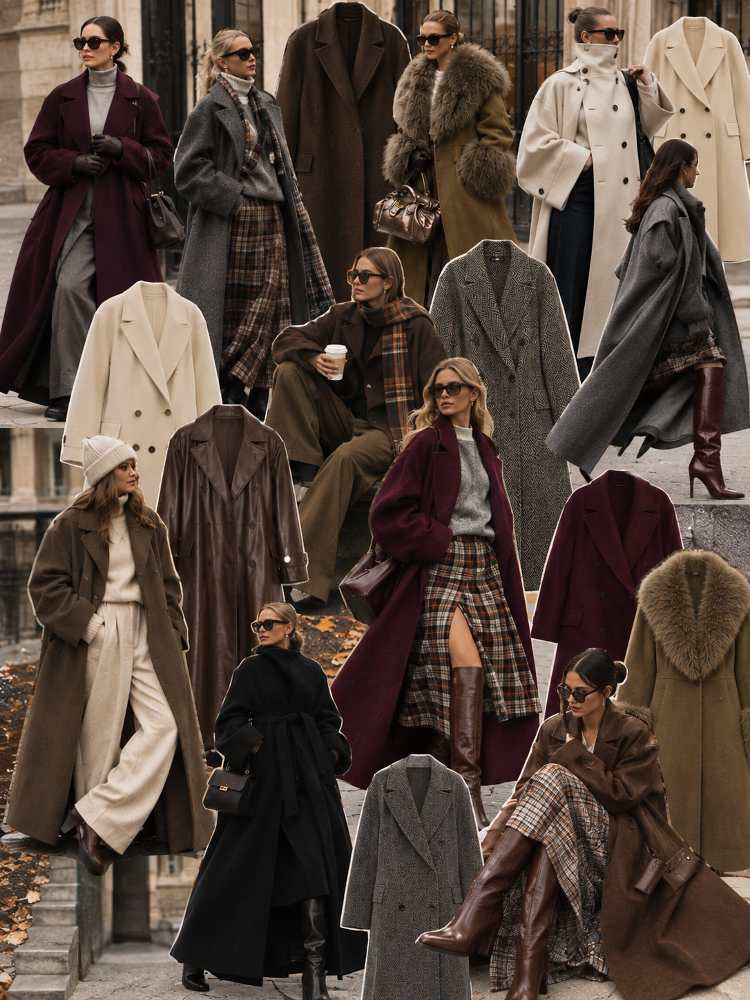
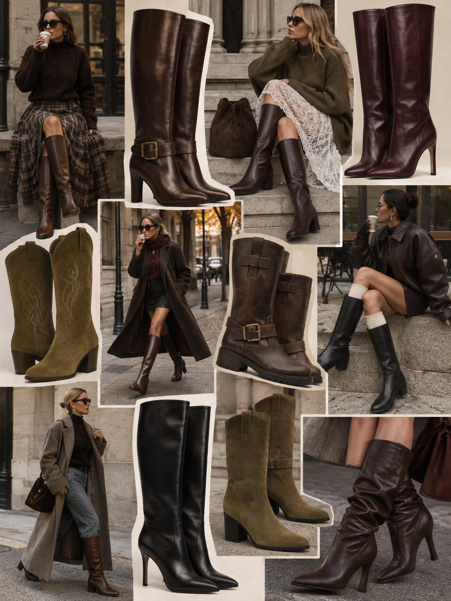
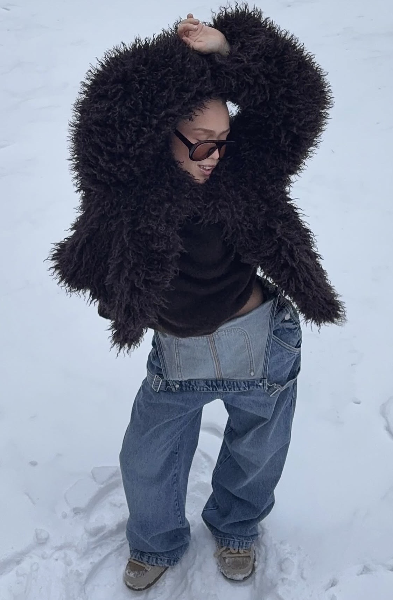
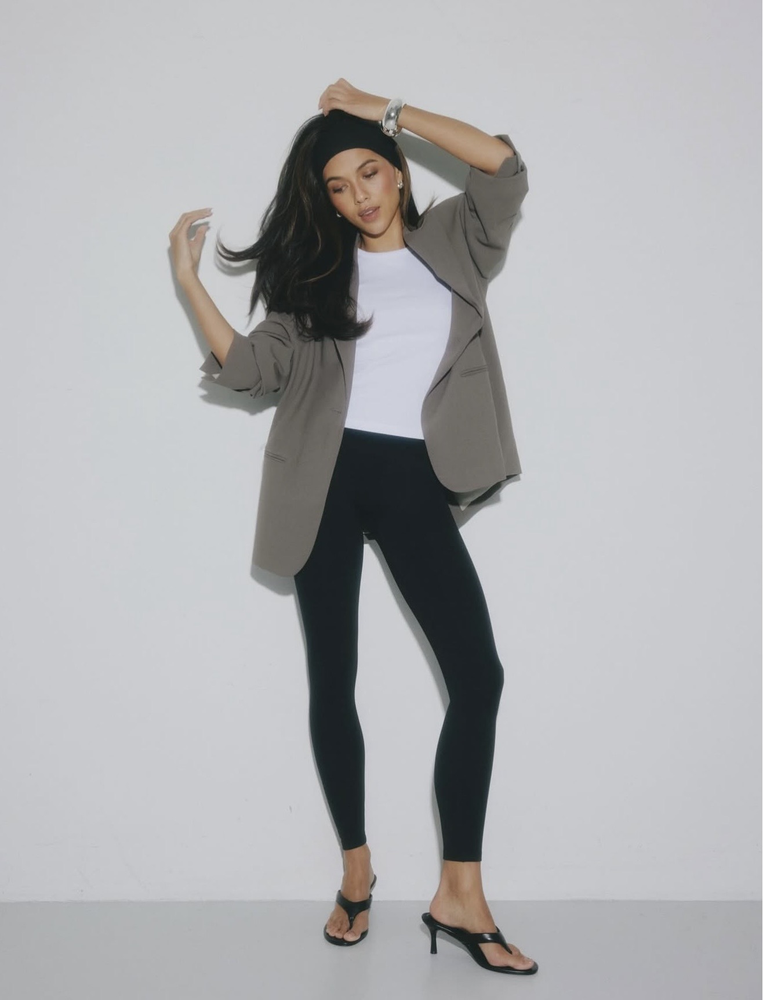

Dette er høstens største trender, og de gamle favorittene er tilbake
Bildet er KI-generert.
Mote · Høst 2026
I en moteverden hvor det stadig dukker opp nye trender, er det interessant å se hvordan gamle trender stadig finner veien tilbake. Hvilke trender preger høsten, og hvilke gamle favoritter gjør comeback?

MinMote
Maren Walther
Maren Walther jobber i det norske motemagasinet MinMote. Hun har gitt oss et innblikk i høstens motebilde og forteller om hvilke farger, plagg og materialer som preger høsten. Hun deler sine personlige favoritter og tanker om hvilke trender vi vil se fremover.
Høstens motebilde preges av mørke farger og varme materialer. Ifølge Walther er lilla en farge som er verdt å merke seg.
«Jeg tror lilla kan bli en av de største, spesielt dype og litt mørkere lillatoner. Den er ganske enkel å kombinere, men gir samtidig antrekket litt mer farge», sier Maren Walther.
Klassiske høstfavoritter gjør comeback
Samtidig peker klassiske høstfavoritter som brunt, burgunder og mørkegrønt seg ut. Dette er farger vi ser kommer tilbake høst etter høst. Andre trender som Walther trekker frem, er lange kåper, strikkegensere, skinnjakker og vide dressbukser.
Lag på lag er også en viktig del av årets høstmote. Strikkegensere kombinert med vide bukser, lange kåper over enkle antrekk og boots som prikken over i-en er eksempler på hvordan man kan sette sammen sesongens plagg.
Flere av plaggene som trekkes frem, er imidlertid ikke nye trender. Dette er klassikere som dukker opp igjen sesong etter sesong. Det kan tyde på at høstmoten ikke nødvendigvis handler om å finne nye plagg, men heller om å gi gamle favoritter en ny kombinasjon.

Sesongen
Høstens største trender
Denne høsten er det særlig lilla, burgunder og rutemønster som preger motebildet. Samtidig er det interessant å se hvordan tidligere trender finner veien tilbake.
Selv om neste sesongs trender etter hvert tar over, betyr ikke det nødvendigvis at fargene eller mønstrene forsvinner helt. Mange trender dukker opp igjen etter noen sesonger og får en ny plass i motebildet.
Klær som kjøpes for å følge en trend, kan fort bli mindre brukt når motebildet endrer seg. Det betyr likevel ikke at plaggene mister sin verdi. Farger, mønstre og materialer som er populære i dag, kan få en ny plass i motebildet senere.
Kanskje handler det derfor om å tenke mer langsiktig når vi handler klær. I stedet for å kjøpe alt som er trendy akkurat der og da, kan det være bedre å velge plagg man faktisk liker, og som kan brukes over flere sesonger.
Bruk pil venstre og pil høyre for å bytte trend. På berøringsskjerm kan du sveipe sidelengs.
-

Bildet er KI-generert.
Lilla
-

Bildet er KI-generert.
Burgunder
-

Bildet er KI-generert.
Ruter
-

Bildet er KI-generert.
Lange frakker
-

Bildet er KI-generert.
Støvler
Garderoben
Personlig stil fremfor nye trender
Maren Walther tror personlig stil og vintage vil få større plass fremover. Hun trekker også frem klær som kan brukes på flere måter.
«Jeg tror vi kommer til å se enda mer fokus på personlig stil, vintage og klær som kan brukes på flere måter», sier Maren.
Det viser at det ikke alltid er nødvendig å kjøpe noe nytt når en trend dukker opp. I stedet kan man bruke sesongens farger og uttrykk til å style klær man allerede eier. For selv om trendene stadig endrer seg, trenger ikke garderoben å gjøre det samme.

